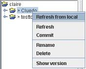
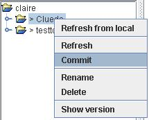

In local tree structure , add files add in the place wanted
In XAGDOP, make a right click on the directorires packaging new files or sub-directories.Choose menu « Refresh from local »
In XAGDOP, make a right click on the directorires packaging new files or sub-directories.Choose menu « Refresh from local »

Faire un clic droit sur le fichier à ajouter au projet, et choisir le menu « Envoyer modifications »

|